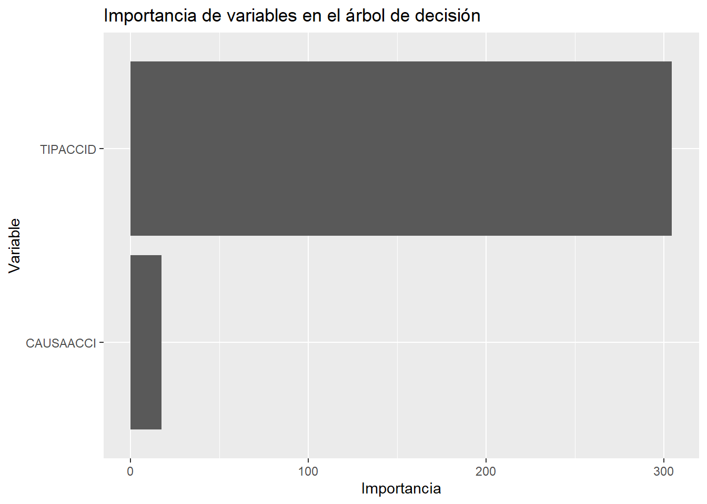
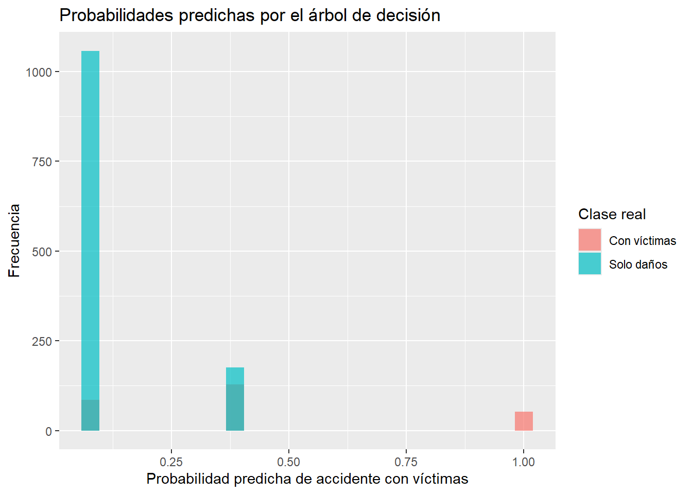

Al finalizar este capítulo, el lector será capaz de:
Explicar la idea básica de un árbol de decisión.
Interpretar reglas de clasificación tipo “si-entonces”.
Entrenar un árbol de decisión en R.
Generar predicciones sobre un conjunto de prueba.
Construir una matriz de confusión.
Calcular métricas de evaluación como exactitud, sensibilidad y especificidad.
Comparar conceptualmente árboles de decisión con regresión logística y k-NN.
6.2 Introducción
Los árboles de decisión son modelos de aprendizaje supervisado que permiten clasificar observaciones mediante una secuencia de preguntas.
Por ejemplo, en nuestro problema de accidentes de tránsito podríamos tener preguntas como:
¿El accidente fue una colisión con motocicleta?
¿Ocurrió de noche?
¿La causa presunta fue el conductor?
¿El día fue fin de semana?
Cada pregunta divide los datos en grupos más pequeños. Al final del camino, el árbol asigna una clase, por ejemplo:
Con víctimas
Solo daños
La principal ventaja de los árboles de decisión es que son fáciles de interpretar. Su estructura se parece a un conjunto de reglas lógicas.
6.3 Idea intuitiva
Un árbol de decisión se parece a un diagrama de flujo.
Cada nodo interno contiene una pregunta sobre una variable. Cada rama representa una posible respuesta. Cada nodo final, llamado hoja, contiene una predicción.
Por ejemplo:
Código
reglas_ejemplo <-data.frame(pregunta =c("¿El accidente fue con peatón?","¿La hora fue nocturna?","¿La causa fue el conductor?" ),posible_decision =c("Mayor riesgo de víctimas","Puede cambiar el nivel de riesgo","Analizar según tipo de accidente" ))reglas_ejemplo
pregunta posible_decision
1 ¿El accidente fue con peatón? Mayor riesgo de víctimas
2 ¿La hora fue nocturna? Puede cambiar el nivel de riesgo
3 ¿La causa fue el conductor? Analizar según tipo de accidente
Interpretación del resultado.
La tabla muestra ejemplos de preguntas que un árbol podría usar para separar accidentes con víctimas de accidentes de solo daños.
6.4 Árboles como reglas si-entonces
Un árbol puede traducirse como un conjunto de reglas.
Por ejemplo:
Si el tipo de accidente es colisión con peatón,
entonces clasificar como accidente con víctimas.
Si el tipo de accidente es colisión con vehículo automotor
y la causa presunta es conductor,
entonces clasificar según la proporción observada en los datos.
Esta característica hace que los árboles sean útiles cuando queremos explicar el modelo a estudiantes, autoridades, tomadores de decisión o personas no especialistas.
6.5 Fundamento matemático
Un árbol de decisión busca dividir los datos en grupos cada vez más homogéneos.
Si una variable respuesta tiene dos clases, por ejemplo:
[ Y = {
\[\begin{array}{ll}
1, & \text{si el accidente tiene víctimas} \\
0, & \text{si el accidente es de solo daños}
\end{array}\]
. ]
entonces el árbol busca particiones donde las observaciones dentro de cada grupo sean lo más parecidas posible respecto a (Y).
Una medida común para evaluar la impureza de un nodo es el índice de Gini:
[ Gini = 1 - _{k=1}^{K} p_k^2 ]
donde (p_k) es la proporción de observaciones de la clase (k) dentro del nodo.
En clasificación binaria:
[ Gini = 1 - p_1^2 - p_2^2 ]
Si un nodo contiene observaciones de una sola clase, su impureza es baja. Si contiene una mezcla equilibrada de clases, su impureza es mayor.
6.6 Ejemplo sencillo del índice de Gini
Supongamos que un nodo contiene 80 accidentes de solo daños y 20 accidentes con víctimas.
Interpretación del resultado.
El índice de Gini mide qué tan mezcladas están las clases dentro de un nodo. Un valor cercano a cero indica un nodo más puro.
6.7 Algoritmo general
Algoritmo: Árbol de decisión para clasificación
Entrada:
- Base de datos con variables predictoras
- Variable respuesta categórica
Proceso:
1. Elegir una variable para dividir los datos.
2. Seleccionar el punto o categoría que produce grupos más homogéneos.
3. Repetir el proceso en cada nuevo grupo.
4. Detener el crecimiento del árbol según ciertos criterios.
5. Asignar una clase a cada hoja.
6. Evaluar el modelo con datos de prueba.
Salida:
- Árbol entrenado
- Reglas de decisión
- Predicciones
- Métricas de evaluación
if (exists("atus_arbol_base")) {round(100*prop.table(table(atus_arbol_base$accidente_con_victimas)), 2)}
Con víctimas Solo daños
17.98 82.02
Interpretación del resultado.
La base está desbalanceada: la mayoría de los accidentes corresponden a solo daños. Por eso, además de exactitud, es importante revisar sensibilidad y especificidad.
Interpretación del resultado.
El conjunto de entrenamiento se usa para construir el árbol. El conjunto de prueba se usa para evaluar el desempeño con datos no utilizados durante el entrenamiento.
6.12 Ajustar el árbol de decisión
Aquí controlamos el tamaño del árbol para evitar que crezca demasiado.
n= 3500
node), split, n, loss, yval, (yprob)
* denotes terminal node
1) root 3500 632 Solo daños (0.1805714 0.8194286)
2) TIPACCID=Caída de pasajero,Colisión con ciclista,Colisión con motocicleta,Colisión con peatón (atropellamiento),Volcadura 877 429 Solo daños (0.4891676 0.5108324)
4) TIPACCID=Caída de pasajero,Colisión con peatón (atropellamiento) 133 0 Con víctimas (1.0000000 0.0000000) *
5) TIPACCID=Colisión con ciclista,Colisión con motocicleta,Volcadura 744 296 Solo daños (0.3978495 0.6021505) *
3) TIPACCID=Certificado cero,Colisión con animal,Colisión con ferrocarril,Colisión con objeto fijo,Colisión con vehículo automotor,Incendio,Otro,Salida del camino 2623 203 Solo daños (0.0773923 0.9226077) *
Interpretación del resultado.
El modelo muestra las divisiones principales del árbol. Cada división representa una pregunta que ayuda a separar las clases.
6.13 Tabla de complejidad del árbol
Código
if (exists("modelo_arbol")) {printcp(modelo_arbol)}
Interpretación del resultado.
La tabla de complejidad ayuda a identificar qué tan grande es el árbol y cómo cambia el error conforme se agregan más divisiones.
6.14 Importancia de variables
Código
if (exists("modelo_arbol")) { importancia <- modelo_arbol$variable.importanceif (!is.null(importancia)) { importancia_df <-data.frame(variable =names(importancia),importancia =as.numeric(importancia) ) |>arrange(desc(importancia)) importancia_df }}
variable importancia
1 TIPACCID 304.70587
2 CAUSAACCI 17.38681
Código
if (exists("importancia_df")) {ggplot(importancia_df, aes(x =reorder(variable, importancia), y = importancia)) +geom_col() +coord_flip() +labs(title ="Importancia de variables en el árbol de decisión",x ="Variable",y ="Importancia" )}

Interpretación del resultado.
Las variables con mayor importancia son las que más ayudan al árbol a separar accidentes con víctimas de accidentes de solo daños.
6.15 Gráfica sencilla del árbol
Para evitar que el PDF se atore, usamos una gráfica base de R. Es menos vistosa que rpart.plot, pero es más ligera y segura.
Interpretación del resultado.
La gráfica muestra la estructura del árbol. Cada nodo representa una regla de decisión y cada hoja representa una clase predicha.
Interpretación del resultado.
Las probabilidades indican qué tan probable considera el árbol que cada observación pertenezca a cada clase.
6.20 Distribución de probabilidades para accidentes con víctimas
Código
if (exists("probabilidades_arbol")) { prueba$probabilidad_con_victimas <- probabilidades_arbol[, "Con víctimas"]ggplot(prueba, aes(x = probabilidad_con_victimas, fill = accidente_con_victimas)) +geom_histogram(bins =25, alpha =0.7, position ="identity") +labs(title ="Probabilidades predichas por el árbol de decisión",x ="Probabilidad predicha de accidente con víctimas",y ="Frecuencia",fill ="Clase real" )}

Interpretación del resultado.
Esta gráfica permite observar cómo el árbol distribuye las probabilidades predichas para cada clase real.
6.21 Comparación conceptual con otros métodos
Aspecto
Regresión logística
k-NN
Árbol de decisión
Tipo de modelo
Paramétrico
No paramétrico
No paramétrico
Interpretabilidad
Alta
Media o baja
Alta
Usa distancias
No
Sí
No
Requiere escalamiento
No siempre
Sí
No
Produce reglas explícitas
Parcialmente
No
Sí
Maneja no linealidad
Limitado
Sí
Sí
6.22 Ventajas y desventajas
6.22.1 Ventajas
Son fáciles de explicar.
Generan reglas claras.
No requieren estandarizar variables.
Pueden manejar relaciones no lineales.
Funcionan con variables numéricas y categóricas.
6.22.2 Desventajas
Pueden sobreajustarse si crecen demasiado.
Pequeños cambios en los datos pueden modificar la estructura del árbol.
Un solo árbol puede tener menor desempeño que métodos de ensamble como Random Forest.
6.23 Conclusión
Los árboles de decisión son modelos intuitivos, visuales e interpretables. Permiten clasificar observaciones mediante reglas tipo “si-entonces”.
En este capítulo usamos un árbol de decisión para clasificar accidentes de tránsito según la presencia de víctimas. También calculamos una matriz de confusión y métricas de evaluación.
Este capítulo prepara el camino para estudiar modelos más potentes basados en muchos árboles, como Random Forest.
Ejecutar el código
# Árboles de decisión para clasificación## Objetivos del capítuloAl finalizar este capítulo, el lector será capaz de:- Explicar la idea básica de un árbol de decisión.- Interpretar reglas de clasificación tipo “si-entonces”.- Entrenar un árbol de decisión en R.- Generar predicciones sobre un conjunto de prueba.- Construir una matriz de confusión.- Calcular métricas de evaluación como exactitud, sensibilidad y especificidad.- Comparar conceptualmente árboles de decisión con regresión logística y k-NN.## IntroducciónLos árboles de decisión son modelos de aprendizaje supervisado que permiten clasificar observaciones mediante una secuencia de preguntas.Por ejemplo, en nuestro problema de accidentes de tránsito podríamos tener preguntas como:- ¿El accidente fue una colisión con motocicleta?- ¿Ocurrió de noche?- ¿La causa presunta fue el conductor?- ¿El día fue fin de semana?Cada pregunta divide los datos en grupos más pequeños. Al final del camino, el árbol asigna una clase, por ejemplo:- `Con víctimas`- `Solo daños`La principal ventaja de los árboles de decisión es que son fáciles de interpretar. Su estructura se parece a un conjunto de reglas lógicas.## Idea intuitivaUn árbol de decisión se parece a un diagrama de flujo.Cada nodo interno contiene una pregunta sobre una variable. Cada rama representa una posible respuesta. Cada nodo final, llamado hoja, contiene una predicción.Por ejemplo:```{r}reglas_ejemplo <-data.frame(pregunta =c("¿El accidente fue con peatón?","¿La hora fue nocturna?","¿La causa fue el conductor?" ),posible_decision =c("Mayor riesgo de víctimas","Puede cambiar el nivel de riesgo","Analizar según tipo de accidente" ))reglas_ejemplo```**Interpretación del resultado.** La tabla muestra ejemplos de preguntas que un árbol podría usar para separar accidentes con víctimas de accidentes de solo daños.## Árboles como reglas si-entoncesUn árbol puede traducirse como un conjunto de reglas.Por ejemplo:```textSi el tipo de accidente es colisión con peatón,entonces clasificar como accidente con víctimas.Si el tipo de accidente es colisión con vehículo automotory la causa presunta es conductor,entonces clasificar según la proporción observada en los datos.```Esta característica hace que los árboles sean útiles cuando queremos explicar el modelo a estudiantes, autoridades, tomadores de decisión o personas no especialistas.## Fundamento matemáticoUn árbol de decisión busca dividir los datos en grupos cada vez más homogéneos.Si una variable respuesta tiene dos clases, por ejemplo:\[Y =\left\{\begin{array}{ll}1, & \text{si el accidente tiene víctimas} \\0, & \text{si el accidente es de solo daños}\end{array}\right.\]entonces el árbol busca particiones donde las observaciones dentro de cada grupo sean lo más parecidas posible respecto a \(Y\).Una medida común para evaluar la impureza de un nodo es el índice de Gini:\[Gini = 1 - \sum_{k=1}^{K} p_k^2\]donde \(p_k\) es la proporción de observaciones de la clase \(k\) dentro del nodo.En clasificación binaria:\[Gini = 1 - p_1^2 - p_2^2\]Si un nodo contiene observaciones de una sola clase, su impureza es baja. Si contiene una mezcla equilibrada de clases, su impureza es mayor.## Ejemplo sencillo del índice de GiniSupongamos que un nodo contiene 80 accidentes de solo daños y 20 accidentes con víctimas.```{r}p_solo_danios <-80/100p_con_victimas <-20/100gini <-1- p_solo_danios^2- p_con_victimas^2gini```**Interpretación del resultado.** El índice de Gini mide qué tan mezcladas están las clases dentro de un nodo. Un valor cercano a cero indica un nodo más puro.## Algoritmo general```textAlgoritmo: Árbol de decisión para clasificaciónEntrada:- Base de datos con variables predictoras- Variable respuesta categóricaProceso:1. Elegir una variable para dividir los datos.2. Seleccionar el punto o categoría que produce grupos más homogéneos.3. Repetir el proceso en cada nuevo grupo.4. Detener el crecimiento del árbol según ciertos criterios.5. Asignar una clase a cada hoja.6. Evaluar el modelo con datos de prueba.Salida:- Árbol entrenado- Reglas de decisión- Predicciones- Métricas de evaluación```## Cargar paquetes y datos```{r}library(readr)library(dplyr)library(ggplot2)library(rpart)``````{r}ruta_atus_ml <-"datos/atus_ml_preparado.csv"file.exists(ruta_atus_ml)``````{r}if (file.exists(ruta_atus_ml)) { atus_ml <-read_csv(ruta_atus_ml, show_col_types =FALSE)print("Base preparada cargada correctamente.")} else { atus_ml <-NULLprint("No se encontró el archivo datos/atus_ml_preparado.csv. Ejecuta primero el capítulo 2.")}```**Interpretación del resultado.** Si aparece el mensaje de carga correcta, podemos continuar con el entrenamiento del árbol de decisión.## Selección de una muestraPara que el capítulo compile rápido en HTML y PDF, usaremos una muestra pequeña de la base. Esto es suficiente para fines didácticos.```{r}if (!is.null(atus_ml)) {set.seed(123) tamano_muestra <-min(5000, nrow(atus_ml)) atus_arbol_base <- atus_ml |>sample_n(tamano_muestra)data.frame(filas =nrow(atus_arbol_base),columnas =ncol(atus_arbol_base) )}```**Interpretación del resultado.** Trabajamos con una muestra para evitar que el árbol sea demasiado grande y para que el PDF se genere sin problemas.## Preparar variables```{r}if (exists("atus_arbol_base")) { atus_arbol_base <- atus_arbol_base |>mutate(accidente_con_victimas =factor( accidente_con_victimas,levels =c("Con víctimas", "Solo daños") ),MES =as.factor(MES),ID_HORA =as.numeric(ID_HORA),DIASEMANA =as.factor(DIASEMANA),TIPACCID =as.factor(TIPACCID),CAUSAACCI =as.factor(CAUSAACCI) ) |>na.omit()table(atus_arbol_base$accidente_con_victimas)}``````{r}if (exists("atus_arbol_base")) {round(100*prop.table(table(atus_arbol_base$accidente_con_victimas)), 2)}```**Interpretación del resultado.** La base está desbalanceada: la mayoría de los accidentes corresponden a solo daños. Por eso, además de exactitud, es importante revisar sensibilidad y especificidad.## División en entrenamiento y prueba```{r}if (exists("atus_arbol_base")) {set.seed(123) n <-nrow(atus_arbol_base) indices_entrenamiento <-sample(1:n, size =round(0.7* n)) entrenamiento <- atus_arbol_base[indices_entrenamiento, ] prueba <- atus_arbol_base[-indices_entrenamiento, ]data.frame(conjunto =c("Entrenamiento", "Prueba"),registros =c(nrow(entrenamiento), nrow(prueba)),porcentaje =c(round(100*nrow(entrenamiento) /nrow(atus_arbol_base), 2),round(100*nrow(prueba) /nrow(atus_arbol_base), 2) ) )}```**Interpretación del resultado.** El conjunto de entrenamiento se usa para construir el árbol. El conjunto de prueba se usa para evaluar el desempeño con datos no utilizados durante el entrenamiento.## Ajustar el árbol de decisiónAquí controlamos el tamaño del árbol para evitar que crezca demasiado.```{r}if (exists("entrenamiento")) { modelo_arbol <-rpart( accidente_con_victimas ~ MES + ID_HORA + DIASEMANA + TIPACCID + CAUSAACCI,data = entrenamiento,method ="class",control =rpart.control(cp =0.01,minsplit =100,maxdepth =4 ) )}``````{r}if (exists("modelo_arbol")) { modelo_arbol}```**Interpretación del resultado.** El modelo muestra las divisiones principales del árbol. Cada división representa una pregunta que ayuda a separar las clases.## Tabla de complejidad del árbol```{r}if (exists("modelo_arbol")) {printcp(modelo_arbol)}```**Interpretación del resultado.** La tabla de complejidad ayuda a identificar qué tan grande es el árbol y cómo cambia el error conforme se agregan más divisiones.## Importancia de variables```{r}if (exists("modelo_arbol")) { importancia <- modelo_arbol$variable.importanceif (!is.null(importancia)) { importancia_df <-data.frame(variable =names(importancia),importancia =as.numeric(importancia) ) |>arrange(desc(importancia)) importancia_df }}``````{r}if (exists("importancia_df")) {ggplot(importancia_df, aes(x =reorder(variable, importancia), y = importancia)) +geom_col() +coord_flip() +labs(title ="Importancia de variables en el árbol de decisión",x ="Variable",y ="Importancia" )}```**Interpretación del resultado.** Las variables con mayor importancia son las que más ayudan al árbol a separar accidentes con víctimas de accidentes de solo daños.## Gráfica sencilla del árbolPara evitar que el PDF se atore, usamos una gráfica base de R. Es menos vistosa que `rpart.plot`, pero es más ligera y segura.```{r, fig.width=8, fig.height=5}if (exists("modelo_arbol")) {plot(modelo_arbol, uniform =TRUE, margin =0.1)text(modelo_arbol, use.n =TRUE, cex =0.7)}```**Interpretación del resultado.** La gráfica muestra la estructura del árbol. Cada nodo representa una regla de decisión y cada hoja representa una clase predicha.## Predicción sobre el conjunto de prueba```{r}if (exists("modelo_arbol") &&exists("prueba")) { pred_arbol <-predict( modelo_arbol,newdata = prueba,type ="class" )head(pred_arbol)}```**Interpretación del resultado.** Cada valor predicho corresponde a la clase que el árbol asigna a una observación del conjunto de prueba.## Matriz de confusión```{r}if (exists("pred_arbol")) { pred_arbol <-factor(pred_arbol, levels =c("Con víctimas", "Solo daños")) real_arbol <-factor(prueba$accidente_con_victimas, levels =c("Con víctimas", "Solo daños")) matriz_confusion_arbol <-table(Real = real_arbol,Predicho = pred_arbol ) matriz_confusion_arbol}```**Interpretación del resultado.** La diagonal principal contiene los aciertos. Los valores fuera de la diagonal representan errores de clasificación.## Métricas de evaluación```{r}calcular_metricas_arbol <-function(real, predicho) { real <-factor(real, levels =c("Con víctimas", "Solo daños")) predicho <-factor(predicho, levels =c("Con víctimas", "Solo daños")) matriz <-table(Real = real, Predicho = predicho) VP <- matriz["Con víctimas", "Con víctimas"] FN <- matriz["Con víctimas", "Solo daños"] FP <- matriz["Solo daños", "Con víctimas"] VN <- matriz["Solo daños", "Solo daños"]data.frame(exactitud = (VP + VN) / (VP + FN + FP + VN),sensibilidad = VP / (VP + FN),especificidad = VN / (VN + FP) )}``````{r}if (exists("pred_arbol")) { metricas_arbol <-calcular_metricas_arbol(real_arbol, pred_arbol) metricas_arbol}```**Interpretación del resultado.** - La exactitud mide la proporción total de clasificaciones correctas.- La sensibilidad mide qué proporción de accidentes con víctimas fueron detectados correctamente.- La especificidad mide qué proporción de accidentes de solo daños fueron detectados correctamente.En problemas desbalanceados, la exactitud puede ser engañosa. Por eso conviene analizar las tres métricas.## Probabilidades predichasAdemás de clases, el árbol puede producir probabilidades.```{r}if (exists("modelo_arbol") &&exists("prueba")) { probabilidades_arbol <-predict( modelo_arbol,newdata = prueba,type ="prob" )head(probabilidades_arbol)}```**Interpretación del resultado.** Las probabilidades indican qué tan probable considera el árbol que cada observación pertenezca a cada clase.## Distribución de probabilidades para accidentes con víctimas```{r}if (exists("probabilidades_arbol")) { prueba$probabilidad_con_victimas <- probabilidades_arbol[, "Con víctimas"]ggplot(prueba, aes(x = probabilidad_con_victimas, fill = accidente_con_victimas)) +geom_histogram(bins =25, alpha =0.7, position ="identity") +labs(title ="Probabilidades predichas por el árbol de decisión",x ="Probabilidad predicha de accidente con víctimas",y ="Frecuencia",fill ="Clase real" )}```**Interpretación del resultado.** Esta gráfica permite observar cómo el árbol distribuye las probabilidades predichas para cada clase real.## Comparación conceptual con otros métodos| Aspecto | Regresión logística | k-NN | Árbol de decisión ||---|---|---|---|| Tipo de modelo | Paramétrico | No paramétrico | No paramétrico || Interpretabilidad | Alta | Media o baja | Alta || Usa distancias | No | Sí | No || Requiere escalamiento | No siempre | Sí | No || Produce reglas explícitas | Parcialmente | No | Sí || Maneja no linealidad | Limitado | Sí | Sí |## Ventajas y desventajas### Ventajas- Son fáciles de explicar.- Generan reglas claras.- No requieren estandarizar variables.- Pueden manejar relaciones no lineales.- Funcionan con variables numéricas y categóricas.### Desventajas- Pueden sobreajustarse si crecen demasiado.- Pequeños cambios en los datos pueden modificar la estructura del árbol.- Un solo árbol puede tener menor desempeño que métodos de ensamble como Random Forest.## ConclusiónLos árboles de decisión son modelos intuitivos, visuales e interpretables. Permiten clasificar observaciones mediante reglas tipo “si-entonces”.En este capítulo usamos un árbol de decisión para clasificar accidentes de tránsito según la presencia de víctimas. También calculamos una matriz de confusión y métricas de evaluación.Este capítulo prepara el camino para estudiar modelos más potentes basados en muchos árboles, como Random Forest.